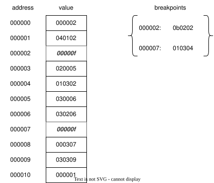

The Problem
-
Tracing execution with
printstatements is tedious -
And impossible (or nearly so) in some situations
-
Single-stepping/breakpoint debugger is far more effective
-
Build one to understand how they work
-
And to show how to test interactive applications
Preparation
-
We will want non-interactive input and output for testing
-
So refactor the virtual machine of Chapter 25
-
Pass an output stream (by default
sys.stdout)
def __init__(self, writer=sys.stdout):
"""Set up memory."""
self.writer = writer
self.initialize([])
- Replace every
printwith a call toself.write
def write(self, *args):
msg = "".join(args) + "\n"
self.writer.write(msg)
Getting Input
- Similarly, don't use
inputfunction directly
def __init__(self, reader=input, writer=sys.stdout):
super().__init__(writer)
self.reader = reader
def read(self, prompt):
return self.reader(prompt).strip()
Enumerating State
-
Old VM was either running or finished
-
New one has a third state: single-stepping
-
So define an enumeration
class VMState(Enum):
"""Virtual machine states."""
FINISHED = 0
STEPPING = 1
RUNNING = 2
- Safer than using strings (which can be mis-spelled)
Running
-
New
runmethod starts inSTEPPINGstate- If it started in
RUNNINGwe could never tell it to do otherwise
- If it started in
def run(self):
self.state = VMState.STEPPING
while True:
if self.state == VMState.STEPPING:
self.interact(self.ip)
if self.state == VMState.FINISHED:
break
instruction = self.ram[self.ip]
self.ip += 1
op, arg0, arg1 = self.decode(instruction)
self.execute(op, arg0, arg1)
Interaction Cases
-
Empty line: go around again
-
Disassemble current instruction or show memory: do that and go around again
-
Quit: change state to
FINISHED. -
Run normally: change state to
RUNNING -
Single-step: exit loop without changing state
Disassembling
OPS_LOOKUP = {value["code"]: key for key, value in OPS.items()}
-
If we type in the number-to-instruction lookup table, it will eventually fall out of step
-
So build it from architecture description

Capturing Output
-
Has to be an object with a
writemethod -
But can save what it's given for later inspection
class Writer:
def __init__(self):
self.seen = []
def write(self, *args):
self.seen.extend(args)
Providing Input
-
Need a "function" that takes a prompt and returns a string
-
Create a class with a
__call__method that "reads" from a list
class Reader:
def __init__(self, *args):
self.commands = args
self.index = 0
def __call__(self, prompt):
assert self.index < len(self.commands)
self.index += 1
return self.commands[self.index - 1]
Testing Disassembly
def test_disassemble():
source = """
hlt
"""
reader = Reader("d", "q")
writer = Writer()
execute(source, reader, writer)
assert writer.seen == ["hlt | 0 | 0\n"]
- Create program (just a
hltinstruction) - Create a
Readerwith the commands"d"and"q" - Create a
Writerto capture output - Run the program
- Check that the output is correct
Is It Worth It?
-
Yes
-
Test that the debugger can single-step three times and then quit
def test_print_two_values():
source = """
ldc R0 55
prr R0
ldc R0 65
prr R0
hlt
"""
reader = Reader("s", "s", "s", "q")
writer = Writer()
execute(source, reader, writer)
assert writer.seen == [
"000037\n"
]
Other Tools
Extensibility
-
Move every interactive operation to a method
-
Return Boolean to signal whether debugger should stay in interactive mode
def _do_memory(self, addr):
self.show()
return True
def _do_step(self, addr):
self.state = VMState.STEPPING
return False
Extensibility
- Modify
interactto choose operations from a lookup table
def interact(self, addr):
prompt = "".join(sorted({key[0] for key in self.handlers}))
interacting = True
while interacting:
try:
command = self.read(f"{addr:06x} [{prompt}]> ")
if not command:
continue
elif command not in self.handlers:
self.write(f"Unknown command {command}")
else:
interacting = self.handlers[command](self.ip)
except EOFError:
self.state = VMState.FINISHED
interacting = False
Extensibility
- Build the table in the constructor
def __init__(self, reader=input, writer=sys.stdout):
super().__init__(reader, writer)
self.handlers = {
"d": self._do_disassemble,
"dis": self._do_disassemble,
"i": self._do_ip,
"ip": self._do_ip,
"m": self._do_memory,
"memory": self._do_memory,
"q": self._do_quit,
"quit": self._do_quit,
"r": self._do_run,
"run": self._do_run,
"s": self._do_step,
"step": self._do_step,
}
Stop Here
-
A breakpoint tells the computer to stop at a particular instruction
- A conditional breakpoint stops if a condition is true
Breakpoint Sets
- Design #1: store breakpoint addresses in a set for
runto check
What Hardware Does
-
Replace actual instruction with new
brkinstruction -
Look up the real instruction when we hit a
brk

Add Commands
-
Rely on parent class to initialize most of the table
-
Then add more entries
def __init__(self):
super().__init__()
self.breaks = {}
self.handlers |= {
"b": self._do_add_breakpoint,
"break": self._do_add_breakpoint,
"c": self._do_clear_breakpoint,
"clear": self._do_clear_breakpoint,
}
Setting and Clearing
def _do_add_breakpoint(self, addr):
if self.ram[addr] == OPS["brk"]["code"]:
return True
self.breaks[addr] = self.ram[addr]
self.ram[addr] = OPS["brk"]["code"]
return True
def _do_clear_breakpoint(self, addr):
if self.ram[addr] != OPS["brk"]["code"]:
return True
self.ram[addr] = self.breaks[addr]
del self.breaks[addr]
return True
Running
def run(self):
self.state = VMState.STEPPING
while self.state != VMState.FINISHED:
instruction = self.ram[self.ip]
op, arg0, arg1 = self.decode(instruction)
if op == OPS["brk"]["code"]:
original = self.breaks[self.ip]
op, arg0, arg1 = self.decode(original)
self.interact(self.ip)
self.ip += 1
self.execute(op, arg0, arg1)
else:
if self.state == VMState.STEPPING:
self.interact(self.ip)
self.ip += 1
self.execute(op, arg0, arg1)